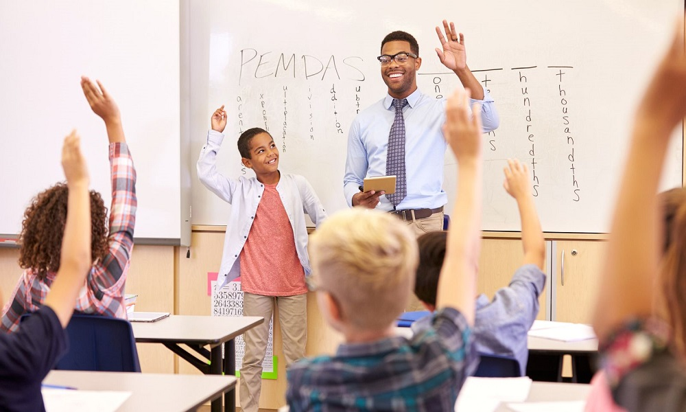

Quality Education
↑ TopIntroduction to Effective Teaching
Quality education depends heavily on the teaching methods employed in the classroom. Effective teaching strategies engage students, promote critical thinking, and create an environment conducive to learning. This page explores several evidence-based teaching methods that have been proven to enhance educational outcomes across different age groups and subjects.
Modern educational research has identified numerous approaches that move beyond traditional lecture-based instruction to create more dynamic, student-centered learning experiences. By implementing these methods, educators can better address diverse learning styles and needs while preparing students for real-world challenges.
Active Learning
Active learning is an approach that engages students directly in the learning process through activities that promote analysis, synthesis, and evaluation of class content.
Key Components
- Student participation in more than just listening
- Less emphasis on transmitting information and more on developing student skills
- Higher-order thinking (analysis, synthesis, evaluation)
- Engagement in activities (reading, discussing, writing)
- Emphasis on students' exploration of their own attitudes and values
Implementation Strategies
Educators can implement active learning through various techniques such as:
- Think-pair-share discussions
- Case studies and problem-solving exercises
- Role-playing scenarios
- Peer teaching opportunities
- Collaborative group work
Research has consistently shown that active learning approaches lead to better retention of information, improved critical thinking skills, and higher student satisfaction compared to passive learning methods.
Project-Based Learning
Project-based learning (PBL) is a teaching method in which students gain knowledge and skills by working for an extended period to investigate and respond to an authentic, engaging, and complex question, problem, or challenge.
Benefits of Project-Based Learning
- Develops real-world skills like collaboration, communication, and critical thinking
- Increases student engagement and motivation
- Provides authentic assessment opportunities
- Connects academic content to practical applications
- Promotes deeper understanding of concepts
Elements of Effective PBL
Successful project-based learning experiences typically include:
- Challenging problem or question
- Sustained inquiry
- Authenticity
- Student voice and choice
- Reflection
- Critique and revision
- Public product
When implemented effectively, PBL can transform the educational experience by making learning more relevant and meaningful to students' lives.
Flipped Classroom
The flipped classroom is a pedagogical approach in which the traditional elements of a lesson are reversed – instructional content is delivered outside the classroom, often online, while activities traditionally considered "homework" are moved into the classroom.
How It Works
In a flipped classroom model:
- Students watch video lectures or read materials at home before class
- Class time is devoted to exercises, projects, or discussions
- Teachers function as coaches or guides
- Students apply concepts and engage in collaborative learning
Advantages and Challenges
Advantages
- Students learn at their own pace
- More time for hands-on activities
- Increased student-teacher interaction
- Promotes student responsibility
Challenges
- Requires reliable technology access
- Initial content creation is time-intensive
- Students may not complete pre-class work
- Adjustment period for students and teachers
Technology Integration
Technology integration involves the effective use of technological tools to enhance teaching and learning. When implemented thoughtfully, technology can expand learning opportunities and help students develop digital literacy skills essential for the 21st century.
Effective Technology Integration
Technology should be:
- Aligned with curriculum standards and learning objectives
- Seamlessly incorporated into teaching practices
- Used to enhance, not replace, effective teaching methods
- Accessible to all students
- Regularly evaluated for effectiveness
Popular Educational Technologies
- Learning Management Systems (LMS)
- Interactive whiteboards and displays
- Educational apps and software
- Virtual and augmented reality
- Adaptive learning platforms
- Video conferencing and collaboration tools
Conclusion
Effective teaching methods continue to evolve as our understanding of learning processes deepens and new technologies emerge. The approaches discussed on this page represent some of the most research-supported strategies available to educators today.
The most successful teachers typically employ a combination of these methods, adapting their approach based on:
- Subject matter and learning objectives
- Student needs, interests, and abilities
- Available resources and constraints
- Cultural and contextual factors
By thoughtfully selecting and implementing these teaching methods, educators can create more engaging, effective, and inclusive learning environments that prepare students for success in an increasingly complex world.